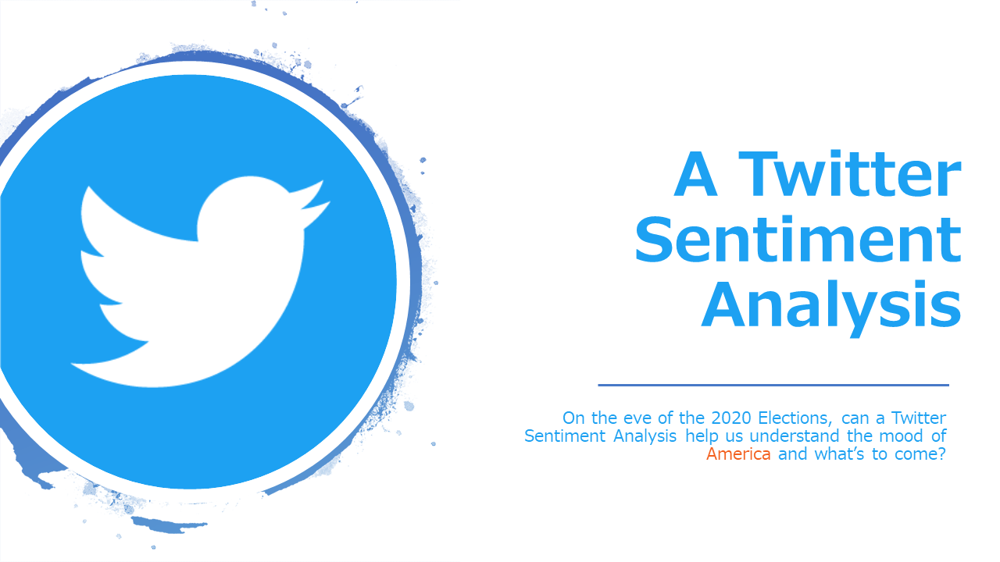

Menu
NLTK Model
Twit Stack GitHub
NRC Stuff
More Visuals
Analysis
Back to the Top
Our Goal
NRC Table and VIS
Visualizations
Super Tuesday!
Our Analysis
Interesting enough
Fun Fact pulled from Tweets?